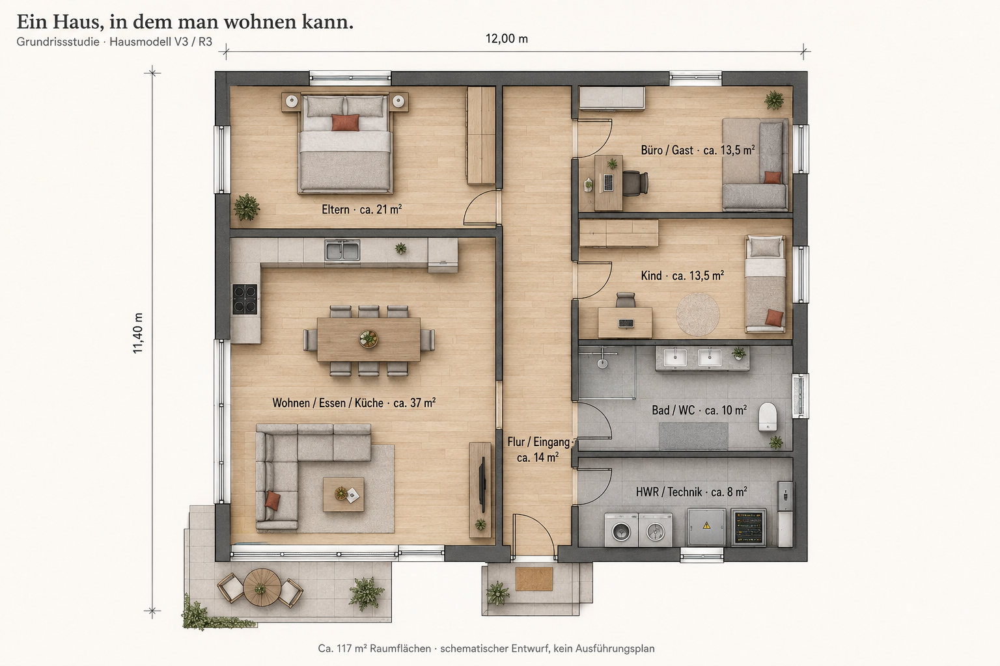
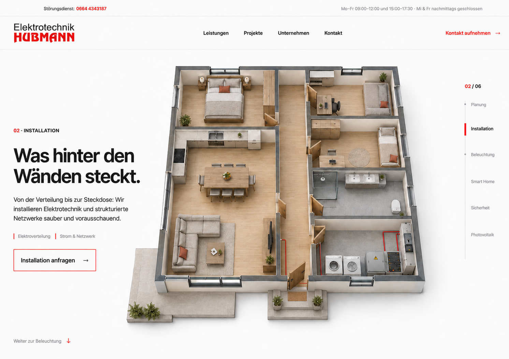

Ein vollständiges Wohnhaus.
Schlafzimmer, Bad und klare Laufwege bilden jetzt die Grundlage. Zwei Bildentwürfe zur Prüfung der Raumaufteilung und der offenen Scrollansicht. Noch kein neues Blender-Modell.

01 / Räume und Erschließung
Jeder Raum hat einen eigenen Zugang vom Flur. Bad und Technik liegen nebeneinander. Der Baukörper wächst auf ungefähr 12 × 11,4 Meter. Maße sind Entwurfswerte; das Bild ist schematisch.

02 / Geöffnet im Frontend
Das Dach ist ausgeblendet, die Raumgrenzen bleiben als niedriger Schnitt lesbar. Für die Leistungen folgen gezielte Nahansichten derselben Szene. Diese Ansicht ersetzt den unvollständigen offenen Hausentwurf aus R2.
Ein Grundriss. Durchgehend.
Möbel, Türen, Fenster und Geräte behalten ihre Position. Die Kamera und die sichtbaren Bauteile ändern sich beim Scrollen.
Ca. 117 m² geplante lichte Raumflächen. Keine normativ ermittelte Wohnfläche.
| Raum | Fläche, ca. |
|---|---|
| Wohnen / Essen / Küche | 37,1 m² |
| Elternschlafzimmer mit Schrankzone | 21,0 m² |
| Kinderzimmer | 13,5 m² |
| Büro / Gästezimmer | 13,7 m² |
| Bad mit WC | 10,0 m² |
| Hauswirtschaft / Technik | 7,8 m² |
| Flur / Eingang | 14,0 m² |